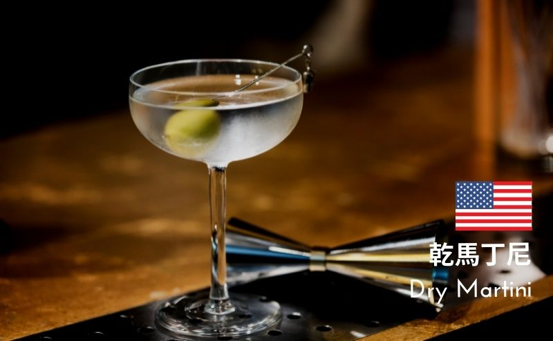

平常吃什麼(學餐)
教學區
全家---就是你知道的全家
.jpg)
.jpg)
.jpg)
小木屋---鬆餅好吃
.jpg)
.jpg)
.jpg)
gay bar---聽說會有神奇生物???
.jpg)
.jpg)
.jpg)
男一宿地下室
自助餐---個人沒有很愛
仙桃總鋪---還可以喇，但付錢方式有點.....
興仁食堂---好吃!!!!
.jpg)
.jpg)
.jpg)
冰窖---有果盤~有飲料~
新宿二樓
雲之羹---羹沒有很愛，但便當還可以(?)
有銘雞排---炸物好吃，臭豆腐~
玉食屋---好吃~但個人覺得偏貴
山口---沒啥東西，但也還可以
.jpg)
.jpg)
呷霸---就是學餐的正常水平(?)
滷味---個人很嫌棄，不喜歡
臻品茶---飲料店，老闆很社牛
放假有什麼特別的(異國料理)
俄羅斯料理
.jpg)
.jpg)
.jpg)
.jpg)
.jpg)
.jpg)
馬來西亞料理
.jpg)
.jpg)
.jpg)
.jpg)
螺絲粉
.jpg)
.jpg)
艾蜜莉の法式布蕾 L’Atelier la Crème Brûlée chez Amélie
.jpg)
.jpg)
.jpg)
滇緬料理
其他
墨西哥 北海道 越南
墨西哥 北海道 越南
經典調酒
第十名：愛爾蘭咖啡 Irish Coffee
這是一款 "熱調酒"，用愛爾蘭威士忌與咖啡元素所組成，在調酒界絕對非常出眾，並且這款咖啡調酒是一位愛爾蘭調酒師為自己暗戀的對象所設計，雖然兩人最後因分隔兩地並未展開戀情，但絕對是所有精點調酒理最浪漫的故事。
愛爾蘭威士忌 --- 50ml 熱咖啡 --- 120ml 鮮奶油 --- 50ml 黑糖 --- 1tsp 咖啡豆 --- 裝飾
第九名：螺絲起子 Screwdriver
原來這螺絲起子還真的是當初工人為了上班能喝點酒提提神、把酒套進柳橙汁，然後口袋的螺絲起子拿來攪一下，完美！當然現在為了讓酒看起來有點高大尚，最後可以放上大片的柳橙 garnish，意境可完全不同。
伏特加 --- 50ml 柳橙汁 --- 100ml 冰塊 --- 適量
第八名：古典雞尾酒 Old Fashioned
這款雞尾酒算是調酒界的靈魂人物，許多經典調酒的發展都是因為早期的酒品質良莠不齊，因此透過調味的方式來掩蓋刺鼻的氣味，而 Old Fashioned 原本是一種透過加入糖與苦精的調製方式，漸漸也變成為一款經典調酒的名字。
波本或裸麥威士忌 --- 45ml 方糖 --- 1顆 安格式苦精 --- 2dashes 開水 --- 適量(浸濕方糖) 大冰塊 --- 1塊 柳橙皮、櫻桃 --- 裝飾
第七名：血腥瑪麗 Bloody Mary
這是一款世界最難喝的調酒絕對當之無愧，看看裏頭的材料有幾樣是你不敢品嚐的，更何況是把這些材料喇在一塊，與其說是一款調酒，不如說它是蔬菜汁更恰當些。只要能變世界之"最"，相信你也能弄出一杯經典流傳千古的雞尾酒。
伏特加 --- 45ml 蕃茄汁 --- 90ml 檸檬汁 --- 15ml 伍斯特醬 --- 2dashes 辣椒醬 (Tabasco) --- 2dashes 鹽、胡椒 --- 適量 冰塊 --- 適量 鹽口&芹菜&醃橄欖 --- 裝飾
第六名：琴費司 Gin Fizz
Gin Fizz 是款相當清爽簡易的調酒，調酒最常用到的酸(檸檬汁)與甜(糖漿) 搭配基酒，最後倒入蘇打水就完成，近幾年還有一款進階版 Romas Gin Fizz，多了一層厚厚且會升起的泡泡，在調酒界裏頭無人不知無人不曉的新寵兒。
琴酒 --- 45 ml 檸檬汁 --- 30 ml 糖漿 --- 10ml 蘇打水 --- 適量 檸檬片 --- 裝飾
第五名：柯夢波丹 Cosmopolitan
這款雞尾酒可是榮登最著名的妹酒(雖然我知道很多妹根本就是酒國女英雄)，它的色澤帶有蔓越莓的鮮豔、口感因為加入了橙酒，幾乎人人都愛這種 "果汁版的酒精"，不得不說真的是男女通殺的一款雞尾酒。重點其迷人的色澤，你知道的，喝酒有時候是需要拍來給別人看滴。
伏特加 --- 40ml 君度橙酒 --- 15ml 檸檬汁 --- 15ml 蔓越莓汁 --- 30ml 柑橘皮 --- 裝飾
第四名：乾馬丁尼 Dry Martini
號稱「雞尾酒之王」，這款雞尾酒可是重度酒精愛好者的首選，強烈的酒感並搭配不加冰的 "馬丁尼杯"(看看連杯子都因為它而成名)，此外還有007詹姆士龐德加持，即便你不是酒精重度愛好者，一定要品嚐一次。

琴酒 --- 60ml 不甜香艾酒 Dry Vermouth --- 10ml 橄欖或檸檬皮 --- 裝飾
第三名：長島冰茶 Long Island Iced Tea
相信各位身邊絕對不缺壞朋友，第一次來酒吧不知怎點，交給朋友處理大概就是幫你點這杯啦！為啥！？因為這杯酒精含量超高、並搭配五款不同的基酒，最後還套上可樂不跟你說它是酒也許你還不會發現哩。真得超好喝，而它為什麼以"茶"來命名，也跟當時調酒發明的時空背景有關係阿，就是不希望人家看出你在喝酒！更詳細故事，最底下還有更深入的連結有做介紹。如果家中已經備好所有常見基酒，嘿！這杯也可在家做。
伏特加 --- 15ml 琴酒 --- 15ml 龍舌蘭 --- 15ml 蘭姆酒 --- 15ml 君度橙酒 --- 15ml 糖漿 --- 20ml 檸檬汁 --- 30ml 可樂 --- 適量 冰塊 --- 適量 檸檬片 --- 裝飾
第二名：瑪格莉特 Margarita
原來這螺絲起子還真的是當初工人為了上班能喝點酒提提神、把酒套進柳橙汁，然後口袋的螺絲起子拿來攪一下，完美！當然現在為了讓酒看起來有點高大尚，最後可以放上大片的柳橙 garnish，意境可完全不同。
龍舌蘭 --- 50ml 橙酒 --- 20ml 檸檬汁 --- 15ml 檸檬片 --- 裝飾 鹽口 --- 裝飾
第一名：莫西多 Mojito
在台灣 Mojito 絕對是排名第一名毫無疑問，這根本是因為周杰倫而爆紅的一款經典調酒，相信大家一定記得那歌詞「麻煩給我的愛人來一杯Mojito」，這款調酒有著濃濃的夏日風情，蘭姆酒帶有熱帶國家氣息，許多夏日雞尾酒都會用Rum作基酒，搭配薄荷與充滿氣泡的蘇打水，清涼暢快且不帶酒精感，不只給愛人來一杯，根本隨時都想尻一杯。這款充滿涼感且順口的調酒可以說是大人版的氣水。
白色蘭姆酒 --- 45ml 檸檬汁 --- 20ml 白砂糖 --- 2tsp(約10ml) 薄荷葉 --- 8片 蘇打水 --- 適量